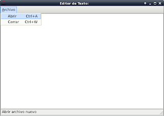
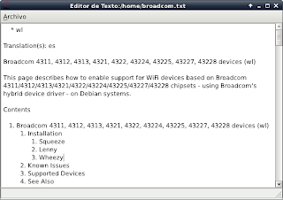

Tutorial de PyQt. Editor de archivos sencillo. Parte 10.
Posted on dom 14 agosto 2011 in Tutorial de Python y PyQt • 2 min read
En este artículo se explica como crear un editor de texto sencillo.
Se tendrá una barra de menú con la opción Archivo, dentro de ella se despliega la opción abrir y cerrar aplicación; al abrir la aplicación en la ventana del editor aparecerá el nombre del archivo.
Se utilizarán las siguientes clases:
- QTextEdit: Define el editor de textos.
- QAction: Permite definir acciones en el menú.
- menuBar: Se define la barra de menú.
El código del programa es el siguiente:
#!/usr/bin/env python
import sys
from PyQt4 import QtGui
from PyQt4 import QtCore
class App(QtGui.QMainWindow):
def __init__(self,parent=None):
QtGui.QWidget.__init__(self, parent)
#Se define el tamano de la ventana
self.setGeometry(0, 50, 600, 400)
#Se le coloca un titulo a la ventana y se asocia un icono.
self.setWindowTitle('Editor de Texto:')
self.setWindowIcon(QtGui.QIcon('./openlogo-50.png'))
#Se define el widget de edicion de texto
self.textEdit = QtGui.QTextEdit()
#Se coloca en el centro
self.setCentralWidget(self.textEdit)
#Se define la barra de estatus y se le asigna foco
self.statusBar()
self.setFocus()
#Se define la accion abrir archivo, con
#evento de teclado y mensaje
openFile = QtGui.QAction('Abrir', self)
openFile.setShortcut('Ctrl+a')
openFile.setStatusTip('Abrir archivo nuevo')
#Se define la accion cerrar aplicacion
#con evento de teclado y mensaje
closeApp = QtGui.QAction('Cerrar',self)
closeApp.setShortcut('Ctrl+w')
closeApp.setStatusTip('Cerrar aplicacion')
#Se define la barra de menu
menubar = self.menuBar()
#Nombre archivo y se agrega abrir y cerrar aplicacion
fileMenu = menubar.addMenu('&Archivo')
fileMenu.addAction(openFile)
fileMenu.addAction(closeApp)
#se asocia los eventos a la accion abrir archivo y cerrar aplicacion.
self.connect(closeApp, QtCore.SIGNAL('triggered()'),QtGui.qApp, QtCore.SLOT('quit()'))
self.connect(openFile, QtCore.SIGNAL('triggered()'), self.showDialog)
def showDialog(self):
#Se captura el nombre del archivo a abrir
filename = QtGui.QFileDialog.getOpenFileName(self, 'Abrir archivo',
'/home')
#Se define un neuvo titulo a la ventan de la aplicacion
self.setWindowTitle('Editor de Texto:%s' %filename)
#Se abre el archivo y se
#desplega la informacion en el widget de
#edicion de texto
fname = open(filename)
data = fname.read()
self.textEdit.setText(data)
#Se ejecuta el programa principal
if __name__ == "__main__":
#Se instancia la clase QApplication
app = QtGui.QApplication(sys.argv)
#Se instancia el objeto QuitButton
qb = App()
#Se muestra la aplicacion
qb.show()
#Se sale de la aplicacion
sys.exit(app.exec_())
La siguiente figura muestra la aplicación al inicio.

La siguiente figura muestra las opciones de la barra de menú:

La siguiente figura muestra la ventana de dialogo de abrir archivo:

La última figura muestra ya la información del archivo en el editor de texto:

===
¡Haz tu donativo! Si te gustó el artículo puedes realizar un donativo con Bitcoin (BTC) usando la billetera digital de tu preferencia a la siguiente dirección: 17MtNybhdkA9GV3UNS6BTwPcuhjXoPrSzV
O Escaneando el código QR desde billetera:
 *
*